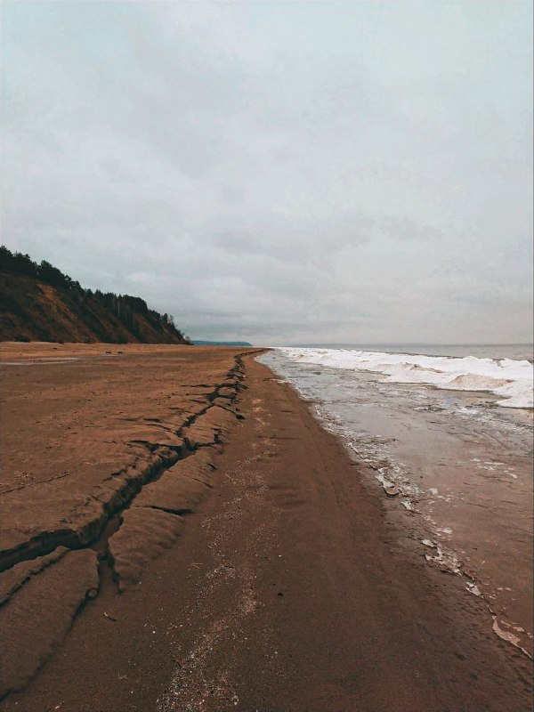
01
Общество и городская среда · событие дня

Сегодня они приехали в Минск. Посетили музей авиации и космонавтики Центра аэроклуба ДОСААФ.…
Якунина прошла согласование в правительстве и приступит к работе с 1 октября .…
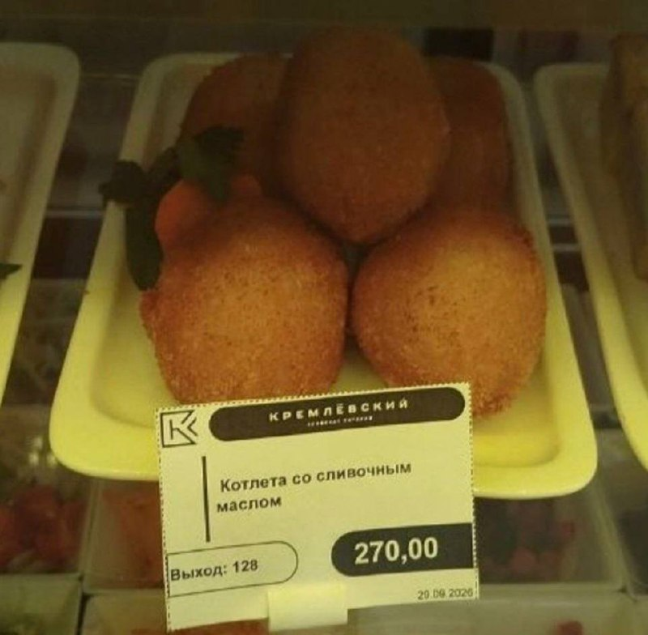
Теперь это просто котлета со сливочным маслом, которая стоит 270 рублей.…
Якунина прошла согласование в правительстве и приступит к работе с 1 октября .…
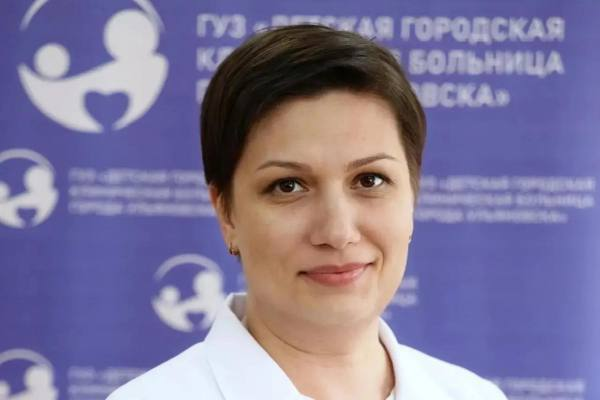
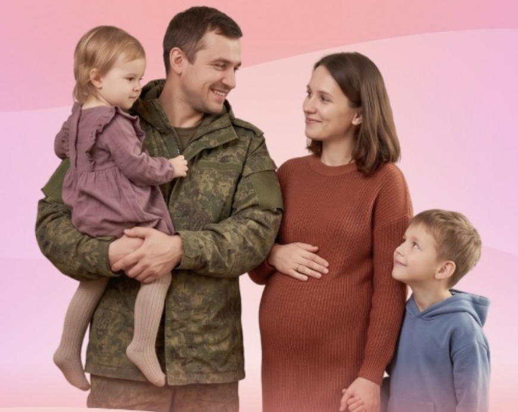
Соцфонд предоставляет меры поддержки семьям, где отцы проходят военную службу по призыву, мобилизованы или учатся на первом курсе военного училища. Об этом сообщает отделение СФР по Ульяновской области.…
В России с 1 октября вступает в силу пакет федеральных законов, регулирующих деятельность торговых интернет-площадок, финансовый сектор, продажу никотина и миграционный учет — об этом сообщили в Государственной думе РФ.…
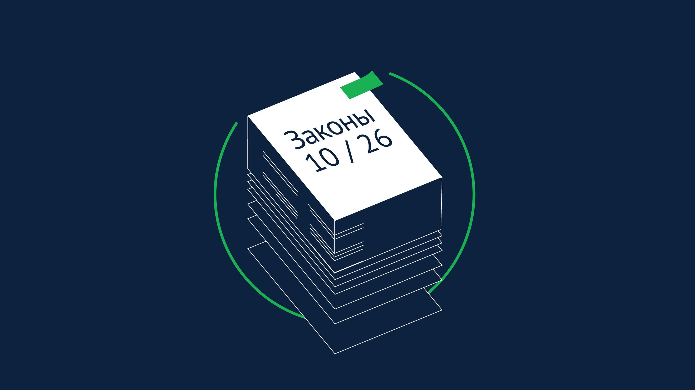
«Омут» с няшками на Карла Маркса, технокультура на Федерации.
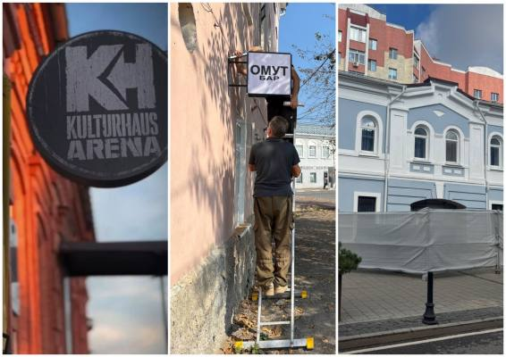
Такой бизнес должен заботиться об экологии, вводить дополнительные соцгарантии для сотрудников, участвовать в общественно значимых проектах, работать прозрачно.…
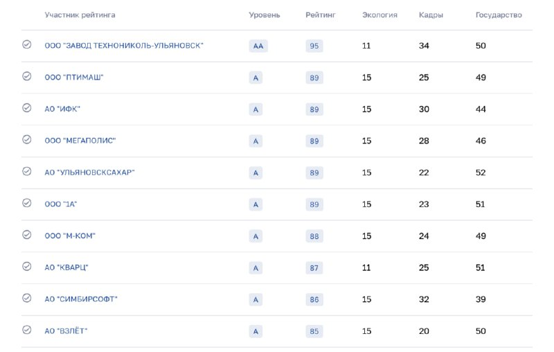
В Ульяновской области хотят ввести статус «ответственный субъект предпринимательской деятельности».…
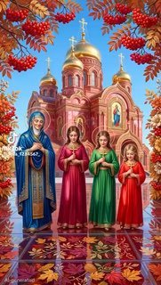
Для многих этот праздник ассоциируется с духовными и семейными ценностями, а потому на праздничных открытках можно увидеть не только пожелания веры, надежды и любви, но также мира в доме, защиты для самых дорогих людей и других не менее значимых благ.……
В среду подует северо-западный ветер со скоростью 5-10 метров в секунду. Температура воздуха ожидается +15...+20 °C.
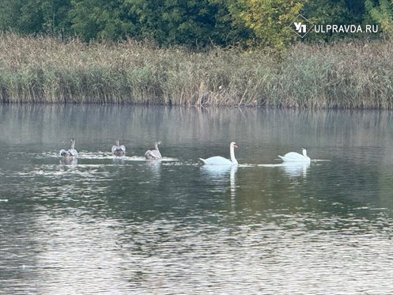
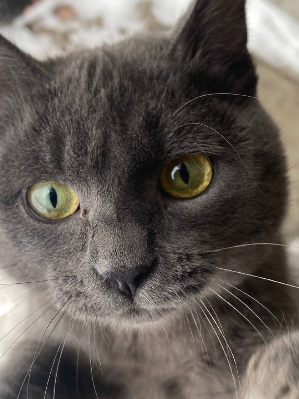
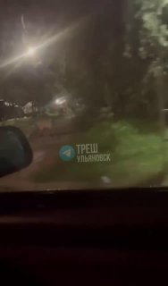
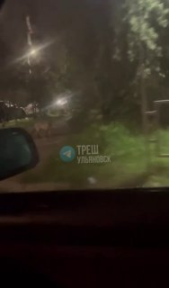
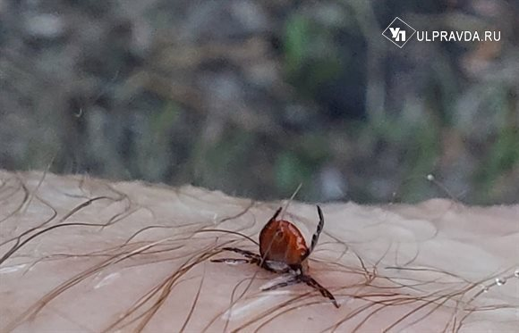
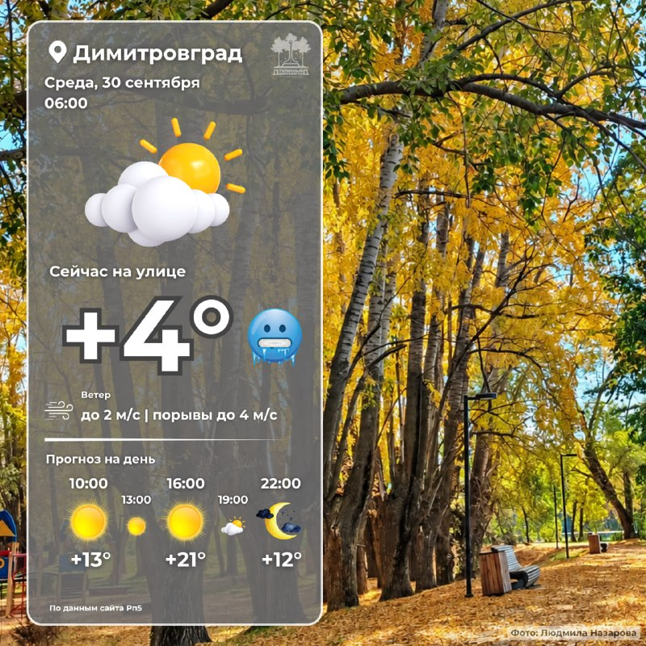
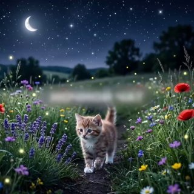
Вся семья из разрушенной квартиры № 29 сейчас проходит лечение после взрыва.…
Сегодня ночью над территорией региона были сбиты вражеские БПЛА.…
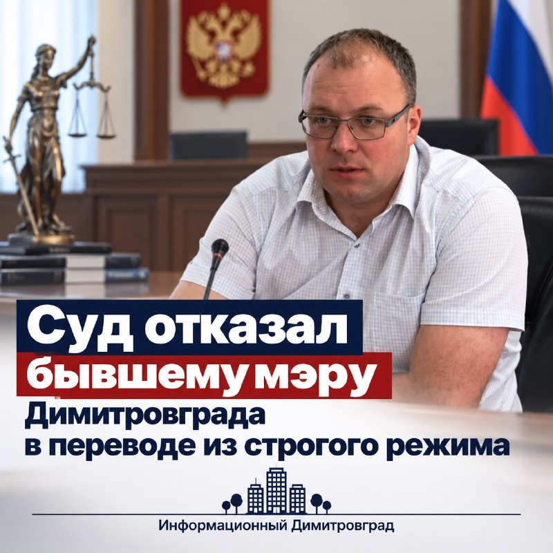
Оперативные выплаты поручил организовать губернатор Алексей Русских.…
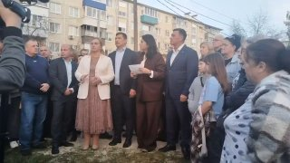
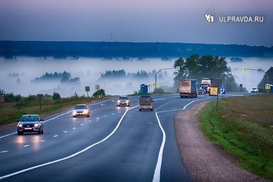
Дежурные подразделения противовоздушной обороны и мобильные огневые группы сбили беспилотные летательные аппараты над территорией Самарской области — об этом сообщил губернатор региона Вячеслав Федорищев.…

Защита планирует оспорить решение. Большаков просил судью Александра Шаброва о переводе в колонию-поселение.
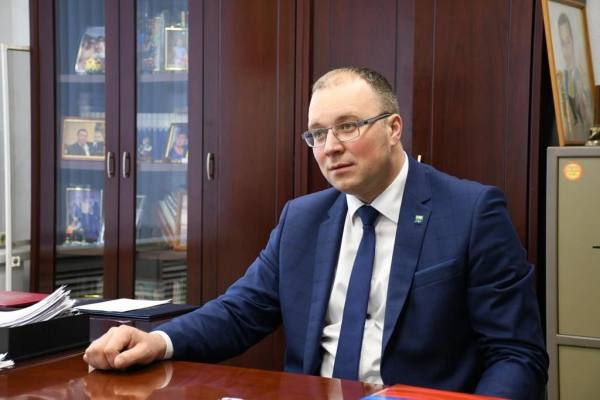
В результате падения обломков повреждены частные жилые дома. На местах работают оперативные службы.…

В области сохраняется режим беспилотной опасности.…
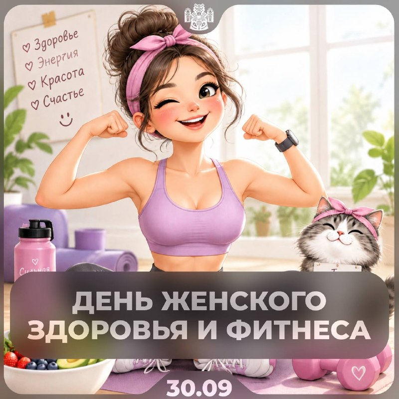
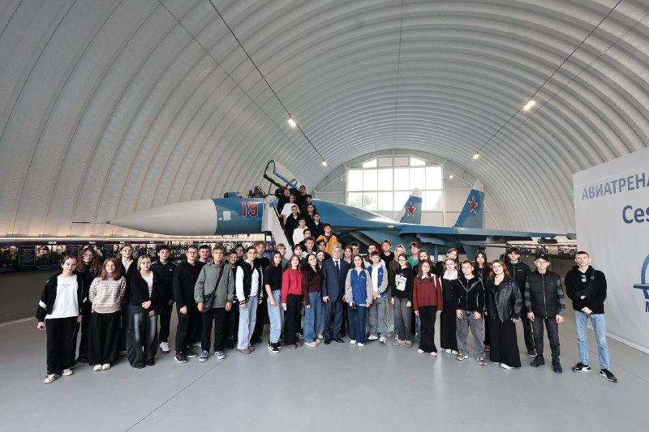
Сегодня они приехали в Минск. Посетили музей авиации и космонавтики Центра аэроклуба ДОСААФ.…
В оформлении использовали профиль Владимира Ленина и образ скульптуры «Родина-мать зовёт!». Ещё одним испытанием стал этап «Семейное блюдо»: Герасимовы вместе лепили вареники.…
Ульяновская «Волга» проведет очередной выездной матч первенства России 4 октября против подмосковного «Велеса» — об этом сообщили в пресс-службе ульяновского футбольного клуба.…
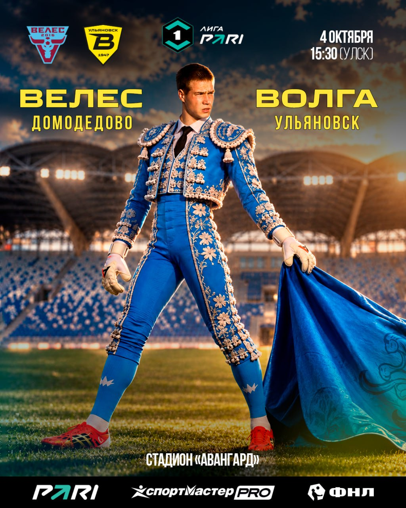
Однако глубокий анализ ситуации показывает: простая смена фигуры на тренерском мостике — это лишь попытка замаскировать глубокий кризис, в котором ульяновский бенди живет уже не первый год.…
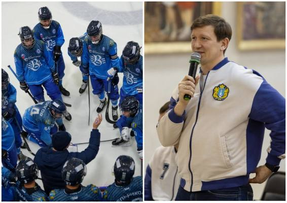
Расскажем немного об этапах. Творческий этап Герасимовы собрали из заготовок, сделанных своими руками, модель бронетранспортёра.…
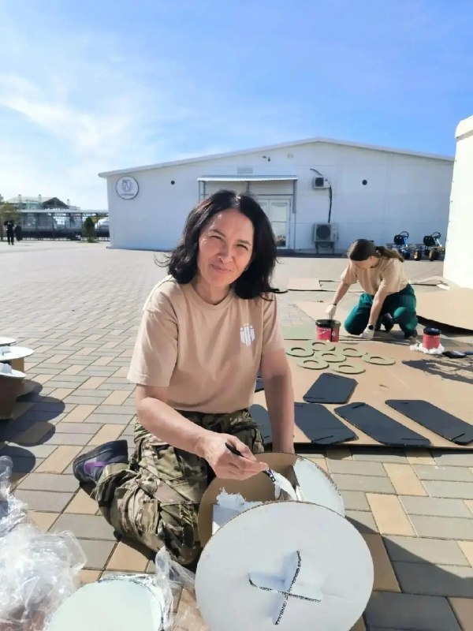
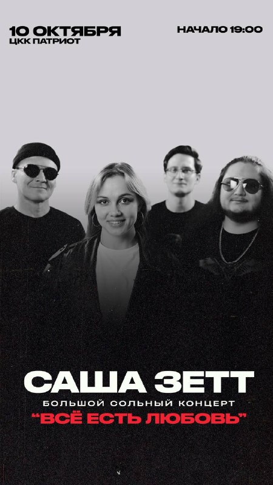
| Тема | Завтра | Ожидание | Уверенность |
|---|---|---|---|
| БПЛА и воздушные угрозы | ↓ спад | ~16.3 упоминаний | средняя |
| Губернатор / власть | ↓ спад | ~26.3 упоминаний | средняя |
| Транспорт и дороги | ↓ спад | ~18.9 упоминаний | средняя |
| Суды и криминал | ↓ спад | ~21.9 упоминаний | средняя |
| Школы и вузы | ↓ спад | ~8.8 упоминаний | средняя |
| Медицина | ↓ спад | ~12.0 упоминаний | средняя |